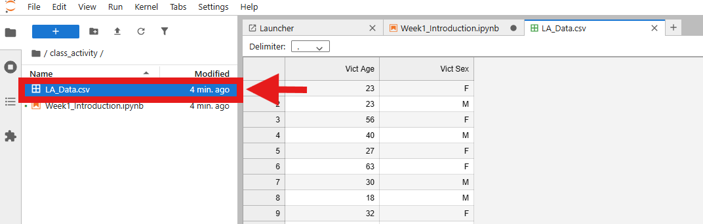

Step 1: Launch Binder Environment 🌐
Click the "Launch Binder" button above to start your R environment. This will take 2-5 minutes to load.
🔄 Binder is launching your environment - please wait patiently!
Step 2: Wait for Environment to Load ⏳
After clicking the link, Binder will show progress through several stages:
- Waiting 🕐
- Building 🔨
- Pushing 📤
- Launching 🚀
The green progress bar shows Binder is almost ready!
✅ Green bar means your environment is ready in just a few seconds!
Step 3: Navigate to Class Activity 📚
Once Binder loads, you'll see the Jupyter Notebook interface. In the left panel, you'll see several folders:
assignment/ - Your homework assignmentsclass_activity/ - Lab tutorials and exercises- Various files (README.md, runtime.txt, etc.)
Click on the class_activity folder to access this week's content.
👆 Click here to access your lab materials
Step 4: Open the Lab Notebook 📖
Inside the class_activity folder, double-click on Week1_Introduction.ipynb to open the interactive lab notebook.
👆 Double-click here to open the lab instructions and code
Step 5: Explore the Data (Optional) 📊
We've already uploaded the data for this lab! The file LA_Data.csv contains the crime statistics data. You can double-click on it to explore the data if you're curious.

👆 Click here to view the raw data (optional)